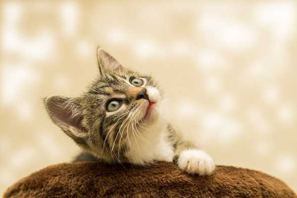

Crianza:
¡Recompenzas!
Educa a tu gato en momentos previos a las comidas. La recompensa alimentaria incrementa su nivel de atención, aunque no se trata de privar a tu gatito de su alimento para motivarle a trabajar.
¡0 distracciones!
Cuando intentes enseñarle alguna norma, elimina todo tipo de distracciones (televisión, música, etc.), ya que cualquier ruido hará que la sesión de aprendizaje sea imposible.
¡Rápido que me aburro!
Las sesiones deben ser breves para evitar que tu gatito se canse o se enfade. Un cuarto de hora es una fracción de tiempo ideal para poder mantener su interés.
Un depredador por naturaleza
A los gatos, por instinto, les gusta rascar, escalar y cazar. Acostumbran a subirse a la mesa porque pueden observarlo todo desde cierta altura. Si ves que esta actitud está unida a intentar arañar muebles, cortinas u otros, formula un “no” consistente y llévalo a su rascador.
Baby dont hurt me, dont hurt me, no more
No te enfrentes a él ni intentes castigarlo. Los gatos tienen un gran sentimiento de dignidad y es fácil herirlos. Cualquier agravio humano les ocasiona dolor, y puede causarles trastornos psicológicos que afectarían mucho vuestra relación.

Alimentación:
El gato es carnívoro
Los antepasados del gato doméstico eran carnívoros estrictos y cazaban. El aparato digestivo de tu minino está adaptado a este tipo de alimentación y como habrás observado también tiene instinto de caza.
Alimento industrial
Según Affinity, los fabricantes de alimentos para gatos, sabedores de los orígenes carnívoros de los mininos, hacen que la mayor fuente de proteína de sus preparaciones sea de origen animal, en forma de carne o de pescado.
¿Cuándo pasar al alimento de adulto?
A los 12 meses tu gato deberá pasar del alimento de cachorros al de adulto. A este último se le conoce como de mantenimiento.
¿Y al alimento de gatos senior?
A partir de los 7 años de edad se suele considerar a un gato senior. Será el momento de cambiar su alimentación de mantenimiento a otra que satisfaga sus nuevas necesidades.
Cómo cambiar la alimentación de un gato
Al igual que ocurre con los perros, el cambio de alimento en gatos deberá hacerse de forma progresiva. Por regla general, se recomienda introducir el nuevo alimento gradualmente a lo largo de 7 ó 10 días. La idea es ofrecerle la nueva comida a la vez que la antigua e ir reduciendo cada vez más la cantidad de antigua.
Los gatos comen cuando les apetece
Por regla general, los gatos se administran bien la comida y no son como los perros, que se lo comen todo del tirón. A no ser que el veterinario recomiende lo contrario, la libre elección de alimento (que el animal tenga acceso al comedero siempre que lo desee) es válida para todos los felinos.
Excepciones a la libre elección de la comida
Los gatos que tiendan al sobrepeso porque no hagan ejercicio u otros motivos podrían engordar si tienen siempre disponible su cuenco de pienso. En estos casos, te recomendamos que sigas las pautas alimenticias de un veterinario.
No hay que darles leche de vaca
Contrariamente al mito popular, los gatos no deben beber leche de vaca pues muchos no la digieren bien por no poseer la enzima que procesa la lactosa.
No es igual un complemento húmedo que un alimento completo
Desde Purina nos recomiendan diferenciar siempre entre un complemento húmedo y un alimento completo húmedo. Al primero le faltan nutrientes y si se quiere se le podrá dar pero solo de forma puntual como un premio, no como su comida habitual.
Un gato sano no necesita suplementos
En Purina dejan claro que el gato sano que sigue una dieta equilibrada no necesita tomar ningún suplemento alimenticio.
La comida cruda no es recomendable
Los alimentos crudos pueden tener parásitos o bacterias como la salmonella, la Listeria o E. coli. Si se diera el caso que el gato los ingiriera, podría enfermar. Si aun así quieres alimentar a tu mascota con comida cruda, te recomendamos que lo consultes con tu veterinario de confianza antes de hacerlo por ti mismo.
Comida húmeda
La comida húmeda se debe servir a temperatura ambiente. Si vas a ponerle al gato algún resto de ella que hayas guardado en el frigorífico, sácala con antelación para que se atempere. No dejes la comida húmeda en su cuenco más de una hora ya que podría generar bacterias y causarle un problema digestivo.
No a las sobras
Los expertos no se cansan de repetir que no debemos darles nuestras sobras a las mascotas. No son premios sino alimentos que pueden desequilibrar su dieta y hasta causarles problemas estomacales.
Los gatos beben poca agua
Por naturaleza los gatos no suelen beber mucha agua. Esto se debe a que el origen de la mayoría de los felinos domésticos se encuentra en zonas desérticas en las que el líquido elemento es muy escaso. Sin embargo, a los mininos no debe faltarles el agua jamás y habrá que estar vigilante sobre todo en los meses de más calor del año.
El gato deberá beber más si toma pienso seco
El alimento seco tiene mucha menos humedad que el que viene enlatado por lo que si tu minino lo toma, deberá beber más cantidad de agua. El alimento seco tiene mayor densidad de nutrientes por peso en comparación con un alimento completo húmedo.